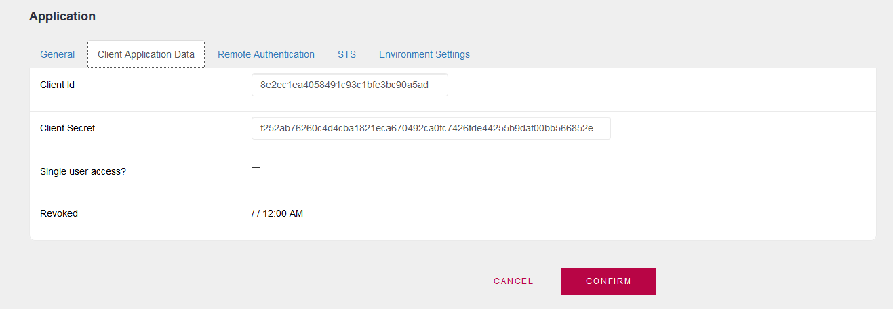
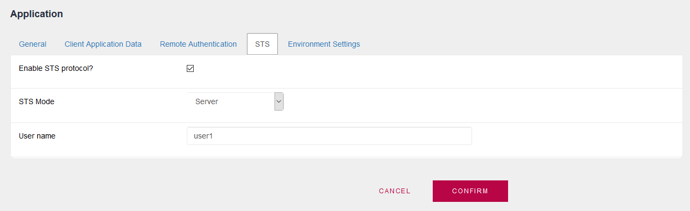
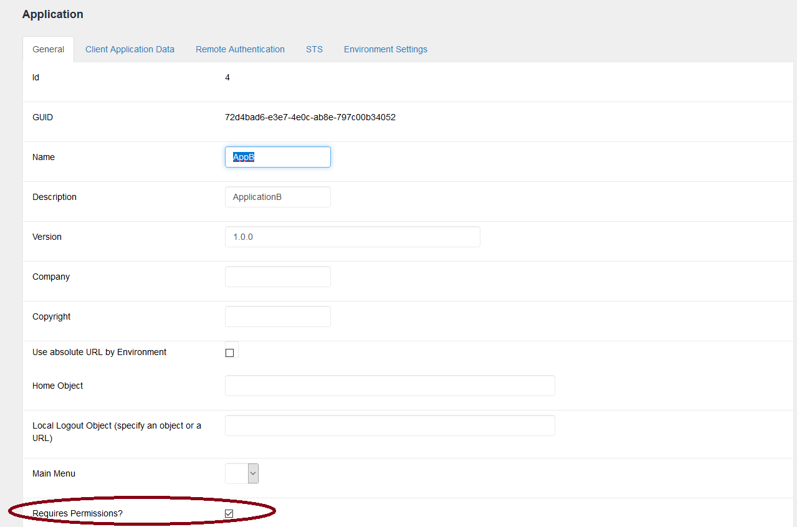
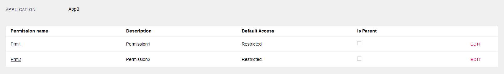
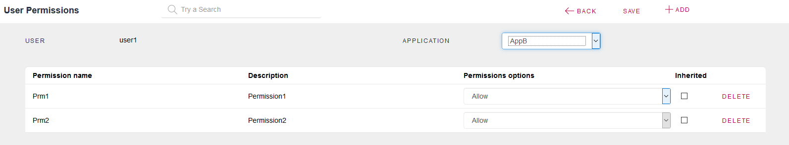
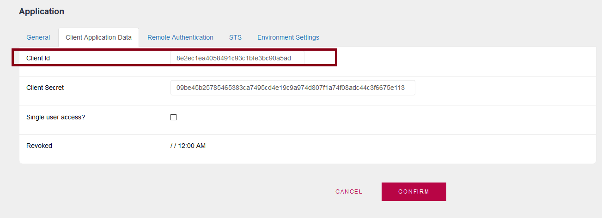
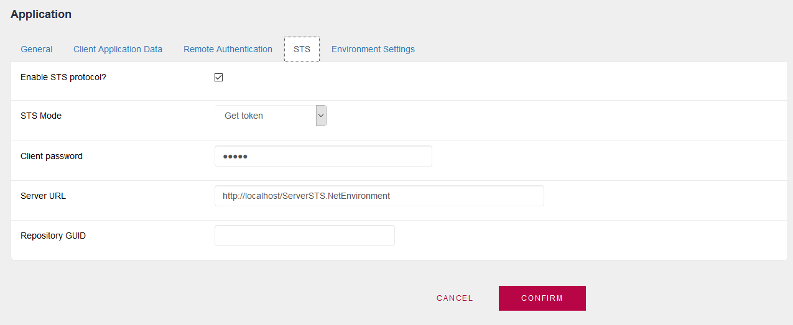
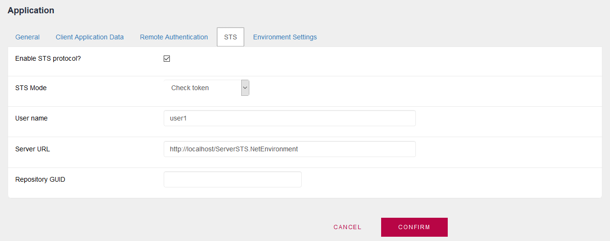
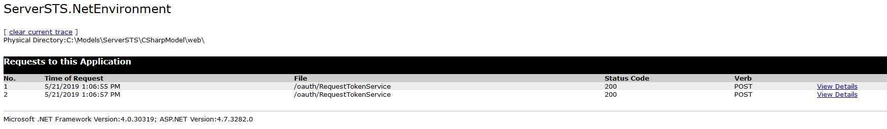
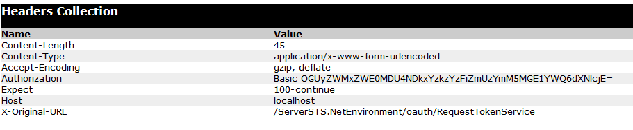

This guide shows how to configure GAM to use Security Token Service (STS). In this scenario, a client application (AppA) requests access to another application (AppB) - for example, to execute a service of this application. Application A redirects to a Security Token Service, which in turn authenticates the client and grants it a security token. For more information on this topic, see Security Token Service Client Authorization using GAM. STS server configuration1. In the GAM Identity Provider STS, each application that can request an STS Token (e.g.: AppA) must be configured.  In each GAM Application you must configure a Client ID (Client Application Identifier). You must enable the STS protocol and configure STS Mode = Server (Token Server).  A user must be created for each application, which may be exclusively a local user; in this case, a user named "user1" was created and assigned to AppA application. 2. In the GAM STS Identity Provider, you must also configure the application for which you want to request a Token, in our scheme "AppB." Note that you have to set Require Access Permissions Application Property to TRUE. On the other hand, the STS server will only authenticate and will return a token regardless of the Application rights to be accessed.  AppB must have defined the Permissions that AppA will use to call it.  The user defined ("user1") has to have those permissions (it can be through roles or directly assigned to the user):  Configuring GAM in "AppA"This is to configure GAM where the request of a service will be executed. In the Client KB, named in the example as "AppA," that application must exist. It must be defined as "AppA" with the same Client ID as in the IP Server STS.  In addition, it must have enabled the STS protocol and configure STS Mode = Get token.  To call the service in AppB from AppA, you should use the GetSTSAuthorizationAccessToken method to get the correct authorization header, and the GetAgentServiceHeader method to get the appropriate headers to call the service. Example
&client_id = !"8e2ec1ea4058491c93c1bfe3bc90a5ad"
&scope = !"AppB.Prm1+AppB.Prm2"
&GAMSTSAuthorizationToken = GAMRepository.GetSTSAuthorizationAccessToken(&client_id, &scope, &GAMErrors)
If &Errors.Count = 0
&access_token = &GAMSTSAuthorizationToken.access_token
GAM.GetAgentServiceHeader(GAMServiceTypesHeader.STSOauth, &HeaderName, &HeaderValue)
&StrCall = "http://localhost/ClientSTS2.NetEnvironment/rest/ProcRest_testSTS"
&httpClient.AddHeader(&HeaderName, &HeaderValue)
&httpClient.AddHeader(!"Content-Type",!"application/x-www-form-urlencoded")
&httpClient.AddHeader(!"Authorization", &access_token)
&httpClient.AddVariable(!"client_id", &client_id) //Note that the &client_id is passed as a variable in the body of the request.
&httpClient.Execute(!"POST", &StrCall)
msg(format(!"ErroCode %1 (%2)",&httpClient.ErrCode.ToString() + !" " + &httpClient.ErrDescription))
msg ("Service Result:" + &httpClient.ToString())
if &httpClient.ErrCode <> 0
//Process Error
Endif
Else
msg(format(!"%1 (%2)",&Errors.Item(1).Message,&Errors.Item(1).code))
Endif
You should check if there is an error, and take action.
For example, consider that you execute the code above and have the following error: ErrCode 1 (The remote server returned an error: (401) Unauthorized.) The first error line is thrown by the code : msg(format(!"ErroCode %1 (%2)",&httpClient.ErrCode + !" " + &httpClient.ErrDescription)) This error means that you have to ask for a new token, because the one that you are using has expired. Configuring GAM in "AppB"This is to configure GAM in the KB where the service that will be called by AppA runs. In GAM, the same "AppA" must be defined with the same Client ID as defined before (in the IP Server STS), in order to enable this application to consume services using an STS Token.  AppB in GAM of App B, must have defined the Permissions that AppA will use to call it. Notes: When it throws the error 60 (Missing required data (scope)), it is that the SCOPE sent is not mapped with the WEB application of that KB. This mapping is done by application name. If the App is called AppB, the received scope must be AppB.Prm1. The local user in this GAM is used when a Service of AppB is called by AppA. If the STS token is correct, a local session related to this user and AppA will be generated, to have registered in the database that the service was executed by a remote application. This will allow the service to know who is running it (the user of AppA) using the GAM methods in the same way it is used if the service is executed using a local token of this KB (for example you could use GAMUser.GetId method). Summary Note that you only need to configure the environment, and consider some aspects to call the resources provided by AppB. Then, GAM executes the invocation to QueryAccessToken automatically and continues with the execution of the service in AppB, if there is no security error. On the other hand, it throws an error which is received by the consumer in AppA. Availability Since GeneXus 16 upgrade 4 Troubleshooting In case any error occurs, you can generate a GAM trace, and the information is shown in the logs. As the information of GAM is thrown in the generator's trace, in the case of NET the ASP Net trace (Log output property = ASP.NET trace) is very useful to see the headers and the variables sent in the body of the HTTP requests. Note that depending on the error displayed, you may need to generate the trace in some or all the components (STS server, "AppA" server, and "AppB" server).  There's a section of the trace where you can see:  In the "AppA" side (where the invocation has been done), you can see in the trace (this information is written by GAM):
|
| Backlinks | |
| GetSTSAuthorizationAccessToken method of GAMRepository Object | Security Token Service Client Authorization using GAM |